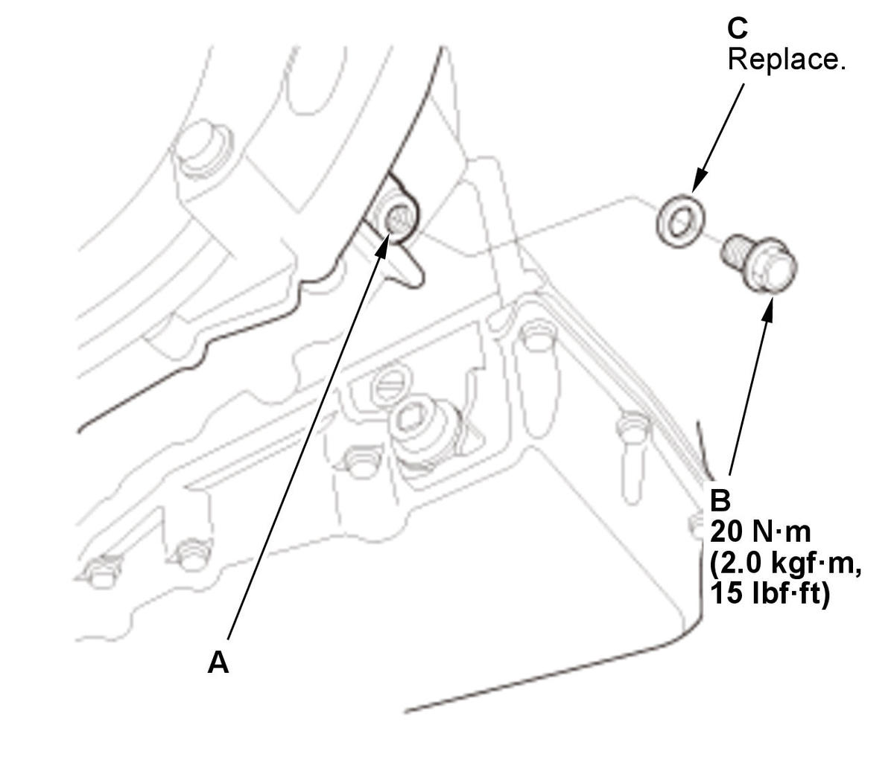

Transmission Fluid (HCF-2) Level Check (L15B7/L15BA/L15BY (CVT)): Check
NOTE: Keep all foreign particles out of the transmission.
- Vehicle - Lift
- Engine Undercover Plate - Remove
- Transmission Fluid Level - Check
NOTE: - Be careful not to burn yourself by the hot part.
- Do the transmission fluid level check immediately, after the shift lever operation.
1. Start the engine.
2. While pressing the brake pedal firmly, shift in turn the transmission to P→R→N→D→S→L→S→D→N→R→P position/mode (without paddle shifter)/P→R→N→D→S→D→N→R→P position/mode (with paddle shifter), and wait for at least 3 seconds to each position/mode.
3. Turn the engine off.
4. Remove the check bolt (A) with the sealing washer (B).
5. Check the transmission fluid level at the check hole (C).
NOTE: The transmission fluid is at the proper level if the transmission fluid is dripping from the check hole gradually.
- If the transmission fluid is dripless from the check hole, check for transmission fluid leaks at the transmission, the transmission fluid pan, the transmission fluid hoses, and the transmission fluid lines. If a problem is found, fix it before filling the transmission with transmission fluid, then go to step 3-6.
- If the transmission fluid is flowing out of the check hole, go to step 3-12.
6. Temporarily install the check bolt with the sealing washer.
7. Lower the vehicle. 8. Remove filler cap B.
9. Refill the transmission with the recommended fluid into the filler hole (A) at the suitable amount. Always use Honda HCF-2 Continuously Variable Transmission Fluid.
NOTE: Using the wrong type of fluid will damage the transmission.
10. Install filler cap B with the lever toward the front of the vehicle.
11. Go to step 3-1, then recheck.
Fig 1: Transmission Fluid Level Check Bolt And Sealing Washer With Torque Specifications (L15B7/L15BA/L15BY - CVT)
Courtesy of HONDA, U.S.A., INC.12. Wait until the transmission fluid is dripping from the check hole (A) gradually. 13. After checking the transmission fluid level, install the check bolt (B) with a new sealing washer (C).
- All Removed Parts - Install
1. Install the parts in the reverse order of removal.